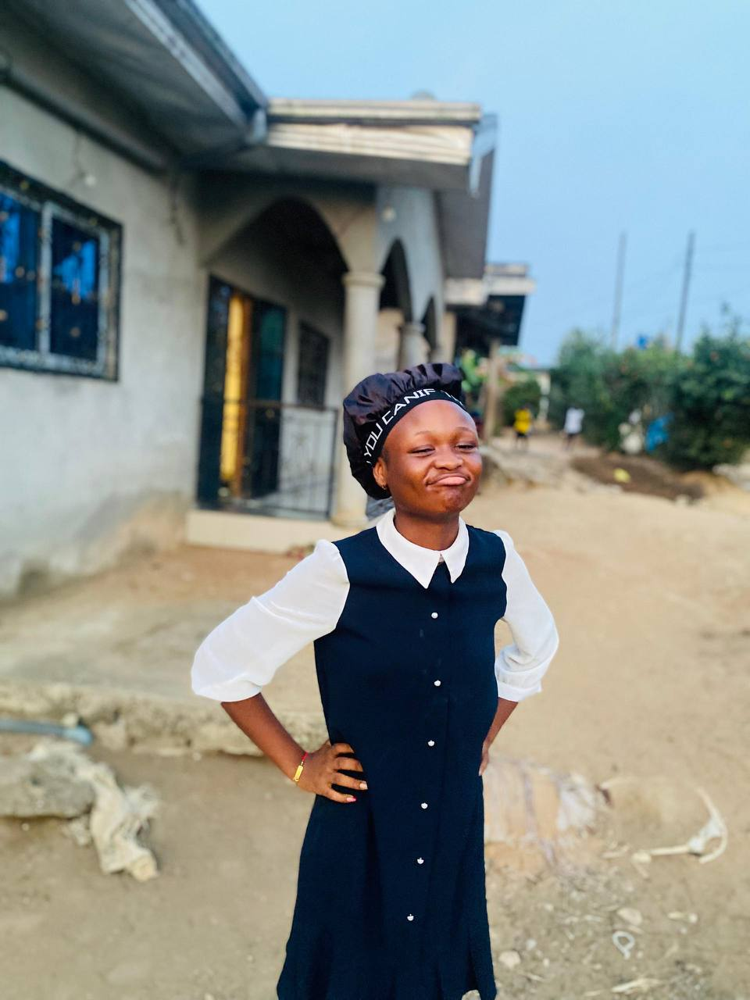

Parce que chaque moment partagé est une feuille ajoutée à ton histoire.

Clique pour agrandir 🔍
Le debut d'annee..
Clique pour agrandir 🔍
tes bêtises.
Clique pour agrandir 🔍
Delire
Clique pour agrandir 🔍
clicher
Joyeux Anniversaire ! 🎉
Et l'histoire continue... ✍️